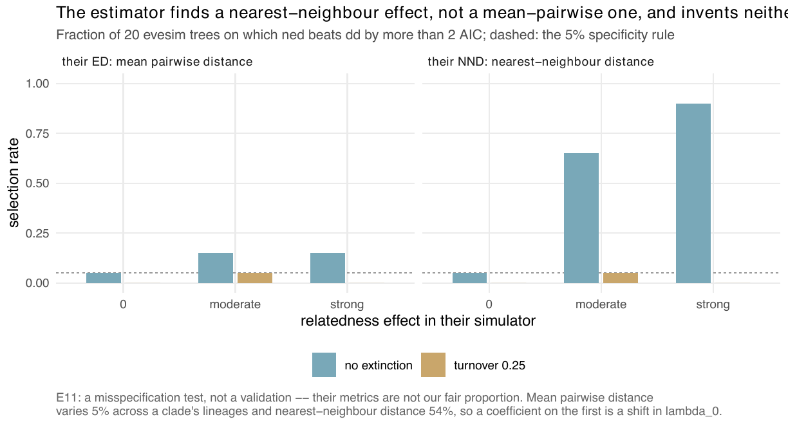

E11 — Does the estimator invent an ED effect on trees from an independent simulator (evesim)?
| Status | complete; the ned fits are unfinished (15-20 of 20 per cell ended on the 100-iteration cap) |
| Package build | library cur, installed at 373eec1 on 2026-09-24; the build audit puts that host's libraries at 373eec1 … f0dff93, identical to clean builds; launched 2026-09-26 with 9 workers and a 3600 s clock |
| Driver / analysis | sim/E11-crosscheck.R; figure sim/figures-e11e14.R |
| Data | results/E11/crosscheck.csv (240 rows = 12 cells x 20 trees), results/E11/design.rds; the supplement's data index says "no merged CSV", which is wrong on disk |
Question
No exact likelihood exists for the ED models, so the estimator had never been run against code that shares no line with it. One independent implementation exists: evesim (Qin, Valente & Etienne 2025, J. Theor. Biol. 598:111992), which simulates \(\lambda\)i = max(\(\lambda\)0 + \(\beta\)N N + \(\beta\)\(\Phi\) \(\Phi\)_i, 0) with \(\Phi\)i a per-lineage relatedness metric. Their metrics are not this package's fair-proportion ED, so this is a misspecification test, not a validation, and the design said so. Two things are testable without the metrics matching: specificity — at \(\beta\)\(\Phi\) = 0 there is no relatedness effect under any metric, so ned should return \(\hat{\beta}\)ED near zero and not be selected; and sensitivity under a different metric — at \(\beta\)\(\Phi\) < 0, reported as measured. E14 checked first that the two simulators agree where they implement the same process.
Design
| parameter | value | meaning |
|---|---|---|
| simulator | evesim::edd_sim, crown age 15, \(\lambda\)0 = 0.5 |
|
| metric | ed (their ED: mean pairwise distance to the other species) and nnd (nearest-neighbour distance) |
neither is the fair proportion |
| \(\beta\)_\(\Phi\) | 0, -0.005 ("moderate"), -0.015 ("strong") | |
| turnover | 0 (\(\mu\)0 = 0, their reported case, nothing hidden) and 0.25 (\(\mu\)0 = 0.125) | the second is the case where the augmentation has work to do |
| \(\beta\)N | calibrated per cell so the median tree is near 100 tips | |
| cells | 2 metrics x 3 \(\beta\)\(\Phi\) x 2 turnovers = 12; at \(\beta\)\(\Phi\) = 0 the two metric cells hold the same trees (identical rows) | |
| trees | 20 per cell | |
| fits | dd and ned, surrogate proposal, 400 draws, max_iter 100, clock 3600 s, rel_change tol 10\(^{-2}\), patience 3, linear link, study box |
Pre-set rule
Specificity: at \(\beta\)_\(\Phi\) = 0, ≥ 90% of trees give \(\hat{\beta}\)_ED within one standard error of zero, and ≤ 5% select ned over dd by more than 2 AIC. Sensitivity: descriptive, no threshold. A failure of specificity is a finding about this estimator; a failure of sensitivity is not.
Results
| cell | \(\beta\)_\(\Phi\) | turnover | ned over dd by > 2 AIC |
median \(\hat{\beta}\)_ED | share \(\hat{\beta}\)_ED < 0 | median ESS (ned) |
ned stop reasons |
|---|---|---|---|---|---|---|---|
| null | 0 | 0 | 0.05 (1 of 20) | -0.0034 | 0.80 | 99.7 | 18 cap, 1 converged, 1 clock |
| null | 0 | 0.25 | 0.00 | +0.0099 | 0.20 | 85.6 | 20 cap |
nnd moderate |
-0.005 | 0 | 0.65 | -0.0194 | 0.95 | 35.2 | 15 cap, 1 converged, 4 clock |
nnd strong |
-0.015 | 0 | 0.90 | -0.0455 | 0.95 | 27.5 | 15 cap, 5 clock |
ed moderate |
-0.005 | 0 | 0.15 | -0.0055 | 0.75 | 55.1 | 19 cap, 1 converged |
ed strong |
-0.015 | 0 | 0.15 | -0.0064 | 0.75 | 175.0 | 18 cap, 1 converged, 1 E-step failure |
nnd moderate |
-0.005 | 0.25 | 0.05 | -0.0030 | 0.55 | 70.3 | 20 cap |
nnd strong |
-0.015 | 0.25 | 0.00 | -0.0124 | 0.70 | 82.9 | 19 cap, 1 clock |
ed moderate |
-0.005 | 0.25 | 0.05 | -0.0026 | 0.60 | 87.9 | 20 cap |
ed strong |
-0.015 | 0.25 | 0.00 | +0.0009 | 0.45 | 136.5 | 20 cap |
No cell is sampler-limited (median ESS 27.5-175). The clock ended 4 and 5 of 20 ned fits in the two nnd cells without extinction (above a tenth); every cell is dominated by the iteration cap.

ned is selected on 0.05 (no extinction) and 0.00 (turnover 0.25). Under their nearest-neighbour metric the selection rate is 0.65 and 0.90 without extinction; under their mean pairwise distance it is 0.15; at turnover 0.25 it is 0.00-0.05 under both.The record attributes the difference between the two metrics to how much each varies across a clade's lineages: mean pairwise distance by 5%, nearest-neighbour distance by 54%, so a coefficient on the first is close to a shift in \(\lambda\)0.
Conclusion
Specificity, selection half: met (0.05 and 0.00 against ≤ 0.05). Specificity, standard-error half: not evaluable — the merged CSV carries no standard error of \(\hat{\beta}\)_ED and no source reports one. Sensitivity (descriptive): the estimator picks up a nearest-neighbour effect at turnover 0 and a mean-pairwise-distance effect rarely, with \(\hat{\beta}\)_ED negative on 0.75-0.95 of trees at turnover 0; at turnover 0.25 the signal is gone under both metrics at these effect sizes. E11 shows the estimator does not select an ED term on another group's null trees; it does not show recovery, since the metrics differ, and its ned fits are unfinished (iteration cap), so the selection rates are floors.